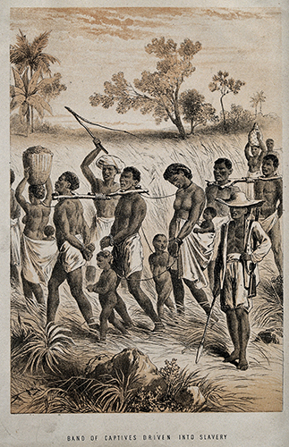

Portfolio
Ee Lin Lee
Department of Communication Studies
Recipient of the 2018 Womxn of Color Empowerment Award

The Enactment of Social Justice through Teaching and Learning
Teaching in Higher Education
"Under the pretense of acting as social justice warriors, many of the privileged fail to examine their uninformed position about social equity issues. Even with good intention, the warriors continue to reinforce their privilege and power status."
Based on my works examining intercultural dialogue, I cannot help but notice the subtleties of the White savoir complex that is ingrained in the increasing effort of enhancing diversity in higher education. The celebration of diversity in academia—from teaching the uneducated to training the educated—when performed without critical cultural consciousness, continues to perpetuate the constructed space of Whiteness. This constructed space of Whiteness that is unexamined is one of the underlying issues among the many complex others in the celebration of diversity in academia. Under the pretense of acting as social justice warriors, many of the privileged fail to examine their uninformed position about social equity issues. Even with good intention, the warriors continue to reinforce their privilege and power status.

Uninformed participation in multiculturalism, therefore, continues to sustain the taken-for-grantedness in the teaching and learning of intercultural communication. The taken-for-grantedness, specifically, what is unsaid, becomes the catalyst of the normalization of arbitrary standards that are set to privilege selected identities but oppress others. Such perpetuation of privilege and the accruement of cultural capital can only be made possible through exploitation of the oppressed. Consider the historical events of the slave trades in the 1600s, the violence in the Black Wall Street in 1921, and the current day unequal treatment of students and faculty of color. These events, with varying levels of suffering among the victimized, are distinctively marked by the options of the privileged—the option to stay uninformed, the option to not hear the muted, and the option to do nothing.
"In many ways, the option of the privileged to do nothing in this disturbing time of the country—when mistreatment of targeted groups is prevalent—continues to support the racist history of this country."
The aforementioned option is also the one that higher education provides to its participants—the option that permits the participants to choose not to engage in the learning about the racist history of the country and the treatment of the oppressed. Even when the participants choose to learn about the exploitation of certain human races, the participants can do so by freely talking about social justice issues without having to risk losing their status quo. In many ways, the option of the privileged to do nothing in this disturbing time of the country—when mistreatment of targeted groups is prevalent—continues to support the racist history of this country.
Critical Cultural Consciousness
"Hence, I believe that participants in higher education must critically question the normalized, unspoken assumptions."
Certainly, in serving higher education, educators contest that it is their place to educate the citizens—citizens who will participate in the joint effort in defending humanity. Furthermore, citizens—educators and learners alike—strive to further better themselves through education. However, “The problem is not people being uneducated. The problem is that they are educated just enough to believe what they have been taught and not educated enough to question what they have been taught” (anonymous quote). Hence, I believe that participants in higher education must critically question the normalized, unspoken assumptions.
I believe that the participants must be made aware, that what is taught to them is:
"As a teacher and learner in the classroom, I seek “to promote inclusive communication in which members of traditionally oppressed groups can engage in open dialogue without feeling afraid, hurt, resentful, ashamed, angry, and/or defensive”. The performance of social justice then could be the most mundane, ordinary effort that citizens of humanity can engage in in interrupting the oppressive system."
Therefore, I teach what I research. I study the problematization of the dominant perspective in theorizing and research. As a scholar, I seek “to unmute, critique, and disrupt normative practices associated with the normalization of Whiteness” (see COMM 425 Syllabus and Reading List). As a teacher and learner in the classroom, I seek “to promote inclusive communication in which members of traditionally oppressed groups can engage in open dialogue without feeling afraid, hurt, resentful, ashamed, angry, and/or defensive” (see COMM 325 Syllabus and Reading List). The performance of social justice then could be the most mundane, ordinary effort that citizens of humanity can engage in in interrupting the oppressive system. Of course, such an approach to research, teaching, and learning does not necessitate an immediate large scale societal reformation. However, as Mother Theresa said, “Be faithful in small things because it is in them that your strength lies.” Therefore, I believe that education with critical cultural consciousness is a form of social engineering—an effort that aids us in moving forward in this arduous path of fighting for social justice, albeit slowly and painfully.
Courses and Sample Work
“Since joining the Communication department at Western, Dr. Lee has boldly faced issues of social justice and discussed topics that many of us are unable or unwilling to face. Through her classes, she directly engages with issues of racism and how it plays a part in each of our lives.
…While challenging preconceived notions, Dr. Lee gives her students the space to explore complicated ideas that face the truths about how racism has been constructed and maintained throughout history. Dr. Lee is upfront about her students about the potential discomfort they may experience throughout the quarter, and how topics will be handled in an open, discussion-based setting. Her presence in the classroom gives students of color a level of comfort that their ideas and experiences are regarded with respect and consideration. By doing so she builds the confidence that so many students of color are lacking, but desperately need for them to become effective advocates of social justice.”
—Yordanos Belete, from Showcase nomination statement
The following are the courses that I teach as I learn to participate in the joint effort in influencing equity and social justice. Since my syllabi detail comprehensive technical matters (e.g., policies and procedures), but not a comprehensive demonstration of how critical cultural communication infuses the coursework, I also provide sample course assignments that I design, along with the readings, to showcase how my students and I learn to become more educated participants for social justice.
COMM 398: Communication Research Methods
This introductory course previews quantitative and qualitative research methods incorporating lecture examples and discussions about multiculturalism in topics such as the ethical treatment of research subjects (e.g., the Tuskegee study); issues of research validity and reliability and scale development (e.g., the conceptualization of communicative competence); statistical display and the origin of the bell curve; and correlational design and hypothesis testing using Hofstede’s cultural dimensions (e.g., individualism-collectivism, uncertainty avoidance, power distance, and masculinity-femininity).
Sample course materials:
- Learning Unit Exercise #1: Tuskegee Study
- Crania Americana, Morton 1839
- Pre-Lecture Activity: Experiments (with A Class Divided video)
- Pre-Lecture Activity: Ethnography (with Speaking Like A Man in Teamsterville article)
- Reading: Thou Soo and Aih Auan: Communicating Dissatisfaction in a Chinese Malaysian Community, Lee & Hall, 2009
COMM 425: Issues in Intercultural Communication (WP1)
As a subject triggers that hostile rejection in many communities, Whiteness studies gained its momentum in the communication discipline in mid-1980s. As W.E.B. Du Bois said, “The problem of the twentieth century is the problem of the color-line—the relation of the darker to the lighter races of men in Asia and Africa, in America and the islands of the sea.” (p. 39 in Edwards, 2007, The Soul of Black Folk). The tensions between us and them, between the darker and lighter races, continue to be difficult dialogues in different settings. Thus, I designed this seminar course to disrupt the normalization of Whiteness and to challenge White racial dominance and supremacy in mundane discourse. This course is grounded in the examination of mundane communicative practices of White people. Topics include the ontological and epistemological underpinnings of (White) communication curriculum, the struggle of (White) instructors to engage in interracial communication, the infusion of multiculturalism in staging the cultural identities of racial minorities, the preservation of White power in academic scholarships, and White enculturation and the use of mundane discourse in the production of good (White) girls. More importantly, the teaching and learning of mundane dialogue among allies, along with their struggles, serve to facilitate participants’ engagement in social justice. See COMM 425 Syllabus, Readings and Assignments.
COMM 420: Issues in Communication Theory (WP1)
This seminar course critiques the assumptions of theory construction and research methods in developing, testing, and applying theories. Course contents focus on theorizing from an inclusive perspective—especially non-Eurocentric or East Asian perspectives. I teach students to reveal and evaluate the unspoken biases taught in popular communication theories and practices they have learned as undergraduates with a critical perspective. This is a perspective that calls for the critical examination of Eurocentrism in communication scholarship, pedagogy, and (undergraduate) curricula. Topics include how to compare seminal theories to the criteria for useful theory construction; why and how international scholars may not necessarily be working in the interest of the ordinary members of their communities; and how and why the United States and its standard American English are used as the golden standards for comparison and articulation in cross-cultural studies.
Sample course materials:
- Theory Analysis and Critique Research Project
- Questions for Study Notes #5
- Questions for Study Notes #9
Sample readings:
- Kelly, 2009: Applying a critical metatheoretical approach to intercultural relations
- Lee, 2007: The Chinese Malaysian selfish mentality
- Lee, 2016: Intercultural dialogue in theory and practice: a review
- Miike, 2007: An Asiacentric reflection on Eurocentric bias in communication theory
- Miner, 1956: Body ritual among the Nacirema
- Moon, 1996: Concepts of “culture”: Implications for intercultural communication
- Nakayama and Martin, 2007: The “White problem” in intercultural communication research and pedagogy
COMM 325: Intercultural Communication
In this class, I challenge students to move beyond their comfort zones to deconstruct power systems and communication practices that privilege certain segments of the society. Main course topics include: “White privilege” and how it systematically damages White people; affirmative action and its justification and (non) support by racial and sexual majorities and minorities; how heterosexual, romantic love between people of different races can be racist; how and why White, hetero-normative assumptions embedded in the communication curriculum (e.g., models of public speaking, professional practices for job interviews, etc.) are considered the standard, competent ways of communication; and how to tackle injustice in order to promote inclusive communication—that is, an open dialogue in which members of traditionally oppressed groups can engage without being ostracized. This course emphasizes critical cultural consciousness.
Sample course materials:
- Discussion Questions
- Participation Exercise: White Culture
- Research Project
- Southern Poverty Law Center, 2005: Responding to everyday bigotry: Speak up!
Sample Readings:
- Dalton, 2012: Failing to see
- Lotter, 2009: Why are all the white kids sitting together?
- Martinez, 2002: Learning to see what I was never supposed to see: Becoming Chicana in a White world
- McIntosh, 1988: White privilege and male privilege: A personal account of coming to see correspondences through work in women’s studies
“I'm nominating Dr. Lee because she offers education as a form of social justice. …I advocate for her classes to be required in the communication studies department, or even as a general university requirement, because it is extremely rare that these topics are out in the open and you get to spend class periods talking about them. I feel honored to have been taught by her because I feel like I am making a difference with my education, through the direct application of her curriculum into my everyday life.”
— Stephanie Springer, from Showcase nomination statement
Conclusion
The cultivation of social justice and equity awareness in teaching and learning, at times, may be seem like a form of struggle in the works of social justice. Oftentimes, such approach of teaching and learning may be criticized as unproductive in the eye of those who impatiently want to propose solutions to get things done right away. In fact, creating informed citizens is an act that does not produce instant gratification. Thus, I argue that the mere act of learning about social injustices is a work toward social justice, for I believe in the potential of each learner—that each of us, if armed with knowledge that criticizes oppression and works for the oppressed, is able to stand up and fight for social justice and equity when we are inspired and ready to do so.